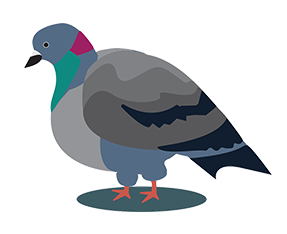

<!doctype html>
<html lang="en"></html>
<html>
	<head>
		<meta charset="utf-8">
		
		<link rel="preconnect" href="https://fonts.googleapis.com">
		<link rel="preconnect" href="https://fonts.gstatic.com" crossorigin>
		<link href="https://fonts.googleapis.com/css2?family=Noto+Sans+Display:ital,wght@0,300;1,300&family=Rubik+Dirt&display=swap" rel="stylesheet">

		<link rel="stylesheet" href="css/style.css">

		<title>thefeed | The Feed</title>

		<link rel="stylesheet" href="css/style.css"> 
	</head>
	
	<div class="header">
		<nav>
		
		<a href="../index.html">My Daily Feed</a>

		</nav>

	</div>
	<hr class="dashed1">
	<br>
	<br>
	<br>
	<br>
	<br>
	<body>
		
		<aside>
			<h2>Welcome to The Feed!</h2>
			<p class="text1">
			This page displays the apps I use daily in my life. Take a scroll and see!
			</p>
			
		</aside>
		

	
		<section>
			<article>
				
				<p class="text2"> Every Friday I usually take the ferry to Vallejo to see my partner for the weekend. It is an easy ride and I love using ferry to get across the bay.</p>
			</article>
	
			<article>
				
				<p class="text2"> I set my alarm for 6:45am everynight before I fall asleep. I try to be in bed by 10:30pm so I get enough rest.</p>
			</article>
	
			<article>
				
				<p class="text2"> Sierra Ferrell has been an artist I've been listening to a lot receenlty. I love her unique voice and true hearted lyrics.</p>
			</article>
	
			<article>
				
				<p class="text2"> I check my calender weekly to remind myself of what day it is, because I often get mixed up with time. It's hard to remeber what day it is sometimes! </p>
			 </article>
	
			<article>
			 
				<p class="text2"> When I'm in Vallejo on Fridays I hangout with my partner at her work. I get to fool around while she works with metal. Tending a fire in the furnace has become my hobby there.</p>
			</article>
	
			<article>
				
				<p class="text2"> There she is! My partner is so cool! I like to watch her work all the big machines because I'm so impressed by what she does.</p>
			</article>
	
			 <article>
				
				<p class="text2"> I often check canvas to see what assignments are due for my classes. There are so many readings this semester! </p>
			</article>
	
			<article>
				
				<p class="text2"> I use apple maps alot to check how long it will take me to get somewhere. I usually check maps before I leave the house. My partner and I use maps alot too, to look up where we are going on our weekend adventures. </p> 
			 </article>
	
			<article>
				
				<p class="text2">Instagram is one of the few social media apps I use, besides Youtube. I feel kind of guilty to say I love Instagram, but I do! It helps me stay connected with friends and people who I have met from around the country/globe.</p>
			</article>
	
			<article>
				
				<p class="text2"> I take alot of pictures because I like to look back on favorite memeories. I take a lot of pictures to 'document' my days and adventures.</p>
			</article>
	
			<article>
				
				<p class="text2"> I recenlty got into Youtube for looking at educational videos about various interests or hobbies. My partner and I like to cool things to watch.</p>
			 </article>
	
			<article>
			 
				<p class="text2"> The stars are my favorite aspect about the earth. I use an app called Sky Guide to look at the constellations. It is my favorite app because it shows me nearly everything about the sky from planets, satellites, mythology, and great circles.</p>
			</article>
		</section>

		<style>
			body {
			background-image: url('img/fairmont.jpeg');
			background-repeat: no-repeat;
			background-attachment: fixed; 
			background-size: cover;
			}
		</style>

	</body>
	<hr class="dashed1">
	<div class="footer">

	</div>


</html>
	

	